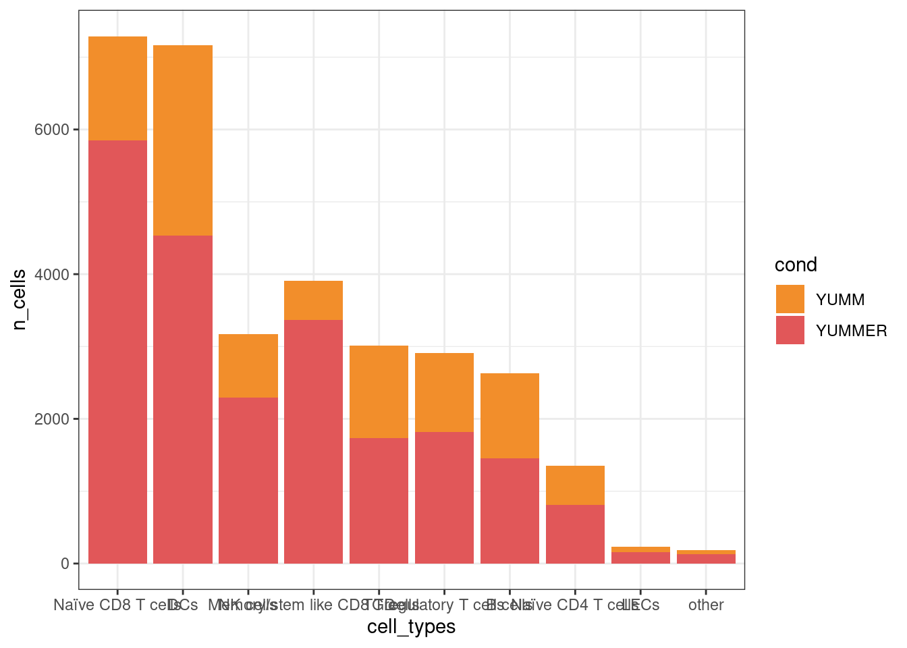
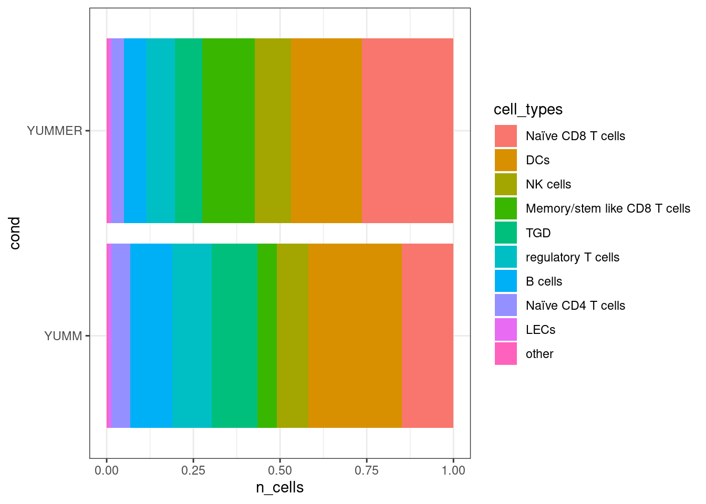

library(dplyr)
library(tidyr)
library(ggplot2)
library(pheatmap)
library(patchwork)
library(Seurat)
library(stringr)
library(ggthemes)
#library(SingleCellExperiment)
library(gridExtra)
library(ggrepel)vis_lymphnode_leukocytes
Visualize expression across different conditions (Leukocytes in lymphnodes)
The experiment consist of 3 main factors of interest:
sample origin: tumor, skin, lymph node
main cell type class: leucocytes, LECs
tumor type: YUMM, YUMMER
As a first check we are interested in the expression of specific marker genes/known marker and how they vary across combinations of these factors.
Preamble
Data objects
From the FGCZ we have different data objects:
Tumor LECs integrated (only tumor LECs, but have been integrated with skin samples) (
data/scData_LEC_tumor.rds)Tumor + skin LECs integrated (
data/scData_LEC_tumor_skin.rds)All skin + tumor cells
All lymphnode cells
Here we work with object 4 - All leukocytes from LN in tumor samples.
#### ----- change to local path to scData.rds object here ----- #####
# e.g. seurat <- readRDS("/home/project/data_folder/scData.rds)")
seurat<- readRDS(file.path("..", "..","..","data", "scData_LN_tumor.rds"))
#### --------------------------------------------------------- #####
# correct condition assignment!!
seurat$cond <- seurat[[]] |>
mutate(
cond = case_when(
str_detect(Sample, "YUMM[0-9]") ~ "YUMM",
str_detect(Sample, "YUMMER") ~ "YUMMER",
str_detect(Sample, "Skin") ~ "skin"
)
) |> select(cond)
# check assignment
table(seurat$Sample, seurat$cond)
YUMM YUMMER
LnYUMM1_1A 1064 0
LnYUMM1_1B 962 0
LnYUMM2_1A 821 0
LnYUMM2_1B 693 0
LnYUMM5_2A 2366 0
LnYUMM5_2B 2236 0
LnYUMM6_2A 766 0
LnYUMM6_2B 814 0
LnYUMMER4_1A 0 4809
LnYUMMER4_1B 0 4142
LnYUMMER7_2A 0 3324
LnYUMMER7_2B 0 3258
LnYUMMER8_2A 0 3366
LnYUMMER8_2B 0 3241table(seurat$cond)
YUMM YUMMER
9722 22140 seurat$cell_types <- seurat$ident |>
as.factor() |>
forcats::fct_collapse("Naïve CD8 T cells" = c("0","1"),
"Naïve CD4 T cells" = c("10"),
"Memory/stem like CD8 T cells" = c("4","14"),
"NK cells" = c("3"),
"TGD"=c("5","13"),
"regulatory T cells" = c("7", "12"),
"DCs" = c("15","2","6", "8"),
"LECs" =c("16"),
"B cells" = c("9", "11"),
"other" = c("17"))
seurat$cell_types_nr <- seurat$ident |>
as.factor() |>
forcats::fct_collapse("0" = c("0","1"),
"1" = c("10"),
"2" = c("4","14"),
"3" = c("3"),
"4"=c("5","13"),
"5" = c("7", "12"),
"6" = c("15","2","6", "8"),
"7" =c("16"),
"8" = c("9", "11"),
"9" = c("17"))
DefaultAssay(seurat) <- "SCT"
cluster_marker <- c("Ptprc", "Cd3e", "Cd8a", "Cd4" ,"Tcf7", "Lef1", "Pdcd1", "Sell", "Tigit", "Cxcr4", "Ccr7", "Foxp3", "Ctla4", "Trdc", "Il12b", "Itgae", "Xcr1", "Cd207", "Notch2", "Itgax", "Itgam", "Il1a", "Cd80", "Cd19", "Prox1", "Pecam1", "Csf2rb", "Csf3r", "Il1r2", "Acta2", "Pdgfrb", "Ctsk", "Cd74", "H2-Ab1", "H2-Aa", "Krt15", "Krt5", "Cd79a", "Ccl3", "Ccl4", "Cd63", "Cxcr3", "Fcgr1", "Fcgr3", "Ncam1", "Cd24a", "Klrb1c", "Cd62l", "Ly6c1", "Adgre1", "Cd44", "Nrp1", "Lag3", "Il2ra", "Icos", "Klf2", "Il7r", "Ifng", "Prf1", "Cd244a", "Cd160")
cond_marker <- c("Cd3e", "Cd8a", "Cd4", "Tcf7", "Lef1", "Pdcd1", "Foxp3", "Cxcr4", "Ifng")Overview
Mean molecule/feature counts
# mean molecules/group
mean_mol <- seurat[[]] |> group_by(cond) |> summarise(mean_mol = mean(nCount_RNA))
mean_mol# A tibble: 2 × 2
cond mean_mol
<chr> <dbl>
1 YUMM 2468.
2 YUMMER 2635.# mean unique genes/group
mean_feature <- seurat[[]] |> group_by(cond) |> summarise(mean_gene = mean(nFeature_RNA))
mean_feature# A tibble: 2 × 2
cond mean_gene
<chr> <dbl>
1 YUMM 1241.
2 YUMMER 1320.Distribution of conditions per cluster
cond_dat <- seurat[[]] |> group_by(cond, cell_types) |> summarise(n_cells = n())`summarise()` has grouped output by 'cond'. You can override using the
`.groups` argument.cond_dat_nr <- seurat[[]] |> group_by(cond, cell_types_nr) |> summarise(n_cells = n())`summarise()` has grouped output by 'cond'. You can override using the
`.groups` argument.ggplot(cond_dat, aes(fill=cond, y=n_cells, x=cell_types)) +
geom_bar(position="stack", stat="identity") +
scale_fill_manual(values = list("YUMM" = "#F28E2B", "YUMMER" = "#E15759")) +
theme_bw()
ggplot(cond_dat, aes(fill=cond, y=n_cells, x=cell_types)) +
geom_bar(position="fill", stat="identity") +
scale_fill_manual(values = list("YUMM" = "#F28E2B", "YUMMER" = "#E15759")) +
theme_bw()
ggplot(cond_dat, aes(fill=cell_types, x=n_cells, y=cond)) +
geom_bar(position="fill", stat="identity") +
theme_bw()
ggplot(cond_dat_nr, aes(fill=cell_types_nr, x=n_cells, y=cond)) +
geom_bar(position="fill", stat="identity") +
theme_bw()ggplot(cond_dat_nr, aes(fill=cell_types_nr, x="", y=n_cells)) +
geom_bar(position="fill", stat="identity", color="white") +
coord_polar("y", start=0) +
theme_void() +
ggtitle("LN CD45") +
facet_wrap(~cond) ggplot(cond_dat, aes(fill=cell_types, x="", y=n_cells)) +
geom_bar(position="fill", stat="identity", color="white") +
coord_polar("y", start=0) +
theme_void() +
ggtitle("LN CD45") +
facet_wrap(~cond) Distribution of cells within umap
DimPlot(seurat,
group.by = "cell_types",
split.by = "cond",
reduction = "umap",
label = T) +
ggtitle("") +
theme(legend.position = "none")
DimPlot(seurat,
group.by = "cell_types_nr",
split.by = "cond",
reduction = "umap",
label = T) +
ggtitle("") +
theme(legend.position = "none")
Cluster marker gene expression
| Cluster | Genes | Cluster | Genes |
| 0 - naive CD8 T cells | Cd3e, Cd8a, Tcf7, Lef1, Sell | 9 - B cells | Cd79a, H2-Aa, H2-Ab1, Cd19, Sell |
| 1 - naive CD8 T cells | Cd3e, Cd8a, Tcf7, Lef1, Sell | 10 - naive CD4 T cells | Cd3e, Cd4, Tsf7 |
| 2 - Monocytes | Ccr7, Csf2rb, Cd63 | 11 - B cells | Cd79a, H2-Aa, H2-Ab1, Cd19, Sell |
| 3 - NK cells | Tsf7, Sell, Itgax, Klra8 | 12 - T regs | Cd3e, Cd4, Sell, Tigit, FoxP3, Ctla4 |
| 4 - exhausted CD8 T cells | Cd3e, Cd8a, Pdcd1, Ctla4 | 13 - TGD | Cd3e, Trdc, Tsf7 |
| 5 - TGD | Cd3e, Tsf7, Sell, Trdc | 14 - CD8 T cells | Cd3e, Cd8a |
| 6 - Granulocytes | Tcf7, Ccr7, Csf2rb, Cd74, H2-Ab1, H2-Aa, Cd63 | 15 - DCs | Itgax, Itgam, Csf2rb, Il1r2, Cd74, H2-Aa, H2-Ab1 |
| 7 - Tregs | Cd3e, Cd4, Sell, Tigit, FoxP3, Ctla4 | 16 - LECs | Prox1, Pecam1 |
| 8 - Granulocytes | Ccr7, Cd80, Csf2rb, Cd63 | 17 - T cells | CD4, Sell |
Dimplots
FeaturePlot(object = seurat, features = cluster_marker, ncol = 3)Warning: Could not find Krt5 in the default search locations, found in RNA
assay insteadWarning in FetchData.Seurat(object = object, vars = c(dims, "ident", features),
: The following requested variables were not found: Krt15, Cd62lViolinplots
VlnPlot(object = seurat, features = cluster_marker, ncol = 2, assay = "SCT", add.noise = F)Warning: Could not find Krt5 in the default search locations, found in RNA
assay insteadWarning in FetchData.Seurat(object = object, vars = features, slot = slot): The
following requested variables were not found: Krt15, Cd62lDotplots
DotPlot(object = seurat, features = cluster_marker) +
theme(axis.text.x = element_text(angle = 45, vjust = 1, hjust=1))Warning: Could not find Krt5 in the default search locations, found in RNA
assay insteadWarning in FetchData.Seurat(object = object, vars = features, cells = cells):
The following requested variables were not found: Krt15, Cd62lConditional marker expression
Expression by condition as Dimplot
FeaturePlot(object = seurat, features = cond_marker, ncol = 2, split.by = "cond")
Expression as violin plot grouped by cluster
VlnPlot(object = seurat,
features = cond_marker,
assay = "SCT",
add.noise = F,
split.by = "cond",
ncol = 1) +
plot_layout(guides = 'collect') &
scale_fill_tableau() &
theme_bw()
Expression as violin plot clusters combined
VlnPlot(object = seurat,
features = cond_marker,
group.by = "cond",
assay = "SCT",
add.noise = F,
ncol = 2) +
plot_layout(guides = 'collect') &
scale_fill_tableau() &
theme_bw()
Expression as violin plot cluster 0
# Subset your Seurat object to only include cells from cluster 7
cluster0_seurat <- subset(seurat, idents = 0)
# Create the violin plot for cluster 7
VlnPlot(object = cluster0_seurat,
features = cond_marker,
group.by = "cond",
assay = "SCT",
add.noise = F,
ncol = 2) +
plot_layout(guides = 'collect') &
scale_fill_tableau() &
theme_bw()
Expression as violin plot cluster 5
# Subset your Seurat object to only include cells from cluster 16
cluster5_seurat <- subset(seurat, idents = 5)
# Create the violin plot for cluster 7
VlnPlot(object = cluster5_seurat,
features = cond_marker,
group.by = "cond",
assay = "SCT",
add.noise = FALSE,
ncol = 2) +
plot_layout(guides = 'collect') &
scale_fill_tableau() &
theme_bw()